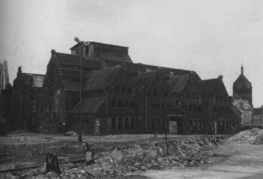
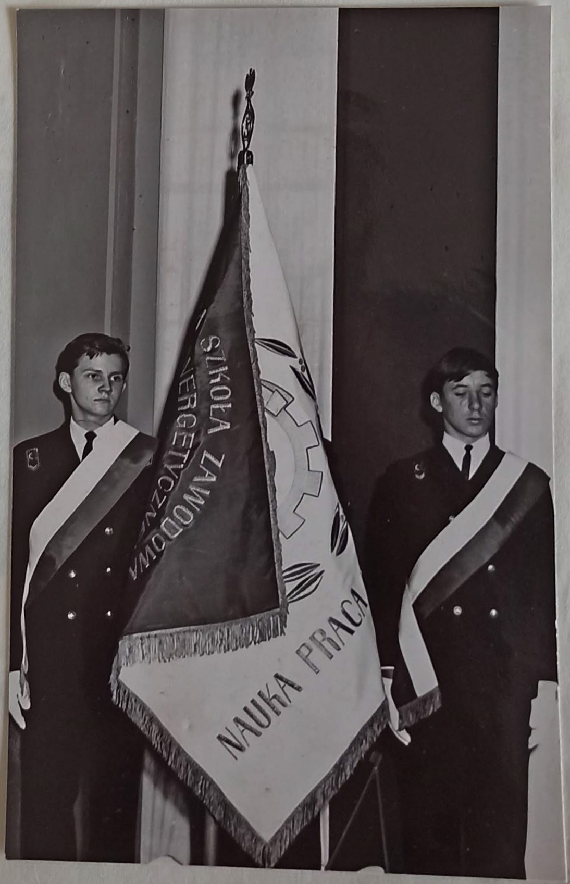
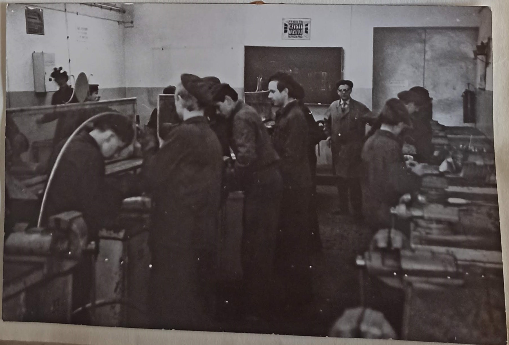

Jesteśmy sklepem odzieżowym wyjątkowym nie tylko z uwagi na oferowane produkty, ale także na bogatą historię, która wiąże nas z tradycją Zespołu Szkół Energetycznych w Gdańsku. Nasza działalność jest hołdem dla dziesięcioleci pracy, pasji i zaangażowania uczniów oraz nauczycieli tej niezwykłej placówki.


Historia szkoły rozpoczęła się w 1946 roku, kiedy to w Gdańsku powstała pierwsza szkoła o profilu energetycznym, mieszcząca się przy ulicy Jaśkowa Dolina 23c. Wkrótce przeniesiono ją na ulicę Sobieskiego 90, gdzie funkcjonowała do 1951 roku. Lata te były początkiem kształcenia przyszłych specjalistów, którzy wspierali odbudowę energetyki w Polsce.

W roku szkolnym 1962/63 powrócono do edukacji w tym kierunku, organizując pierwsze klasy o profilu elektromontera. Od 1965 roku szkoła przeniosła się na ulicę Ołowianka 1, gdzie powstało również Technikum Energetyczne dla Pracujących. Uroczyste otwarcie nowego budynku odbyło się 20 listopada 1965 roku – w Dzień Nauczyciela – i od tego momentu placówka dynamicznie się rozwijała, stając się jednym z kluczowych ośrodków edukacji technicznej w regionie.
Integralną częścią historii Zespołu Szkół Energetycznych były warsztaty szkolne, które funkcjonowały w latach 1946-1999. Warsztaty te, obejmujące obróbkę ręczną i mechaniczną, spawalnię, kuźnię oraz dział elektryczny, były miejscem praktycznej nauki zawodu. Ucz niowie zdobywali tu doświadczenie, które następnie rozwijali podczas praktyk w takich zakładach jak Zakład Energetyczny Gdańsk, Elektrociepłownie w Gdańsku i Gdyni czy Zakłady Remontowe Energetyki.
Sklep odzieżowy, który prowadzimy, jest kontynuacją tej tradycji pracy, nauki i pasji. Nasze produkty odzwierciedlają ducha innowacji i zaangażowania, które od dziesięcioleci towarzyszą Zespołowi Szkół Energetycznych. Każdy zakup wspiera edukację kolejnych pokoleń, pomagając pielęgnować dziedzictwo, które nas ukształtowało. Zapraszamy do wspólnego tworzenia przyszłości w oparciu o solidne fundamenty przeszłości!